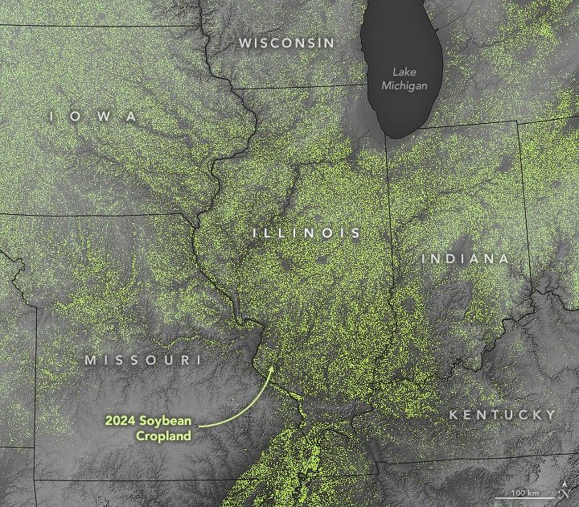

Field of Soy Dreams in Illinois
In Illinois, soybeans are big business. The state’s farmers harvested 64 bushels per acre in 2024, producing a record 688 million bushels of the versatile legume. The plant’s protein-rich beans are widely used as food for both livestock and people, as well as for the production of biodiesel and other industrial products.
The map above depicts data from the Cropland Data Layer, an annual, geo-referenced, crop-specific land cover dataset created by the USDA National Agricultural Statistics Service (NASS) for the contiguous United States. It uses data collected by Landsat satellites and Sentinel-2 to identify crop types. The elevation data layered onto the image comes from the Shuttle Radar Topography Mission (SRTM). Areas classified as soybean fields in 2024 are light green. Farmers in the Midwest often grow soybeans in rotation with other crops, usually corn and wheat.
The 2024 soybean harvest in Illinois was the nation’s largest, amounting to 16 percent of the total U.S. crop. A harvest of that scale supports tens of thousands of jobs and generates roughly $7 billion in economic output. Iowa trailed closely with 597 million bushels, followed by Indiana and Minnesota with 341 million and 329 million bushels, respectively.
Illinois growers benefit from having access to fertile soils, flat terrain that enables easy harvesting, and convenient transportation options and processing facilities. Soybeans are grown widely, with the exception of the Chicago area and the hilly region in the southern part of the state. McLean County, in east central Illinois, had the largest harvest of any U.S. county in 2024, producing 22.6 million bushels.
Illinois is also an important hub of agricultural innovation and research. Through the NASA Acres consortium, the University of Illinois Urbana-Champaign is working with other universities on 14 programs designed to convert satellite data into useful information for farmers.
For instance, University of Illinois researcher Kaiyu Guan, chief scientist for NASA Acres, is leading an effort to combine satellite data with ground sampling and hyperspectral imaging to determine the optimal nitrogen levels for crops. Guan and colleagues recently released an online calculator—the Maximum Return To Nitrogen (MRTN) Tool—designed to help Illinois farmers maximize profit while minimizing environmental problems.